摘要：手撕算法多为框架，包括常用技巧、十大排序算法、查找、分治与递归、动态规划、贪心、BFS 框架、DFS框架与回溯、缓存淘汰算法。基本涵盖labuladong 的算法小抄、CodeTop频度前40、剑指 Offer（第 2 版）、LeetCode 热题 HOT 100常见例题。
[TOC]
大部分开发岗位工作中都是基于现成的开发框架做事，不怎么会碰到底层数据结构和算法相关的问题，但技术相关的岗位，数据结构和算法的考察，公认的程序员基本功。
一题多解、多题一解。一句话题解、写题目详解、写总结。
分析算法复杂度时，分析的是最坏情况的复杂度。
O(1)、O(n)、O(lgN)。
排序算法总结和比较。注意写代码的流畅度。
可分为：
内部排序：数据记录在内存中进行排序；
非比较类排序（线性时间）：不通过比较、而是通过每个元素前的元素个数来排序（决定元素间的相对次序）；
O(n)；外部排序：数据量很大，内存一次不能容纳全部记录，需访问外部文件（外存）。
稳定性：相同的值经过排序后、相对次序保持不变。
四个不稳定的算法：希快选堆（1.2、2.2、3.1、3.2）。
可能变为不稳定：插冒（1.1、2.1）。
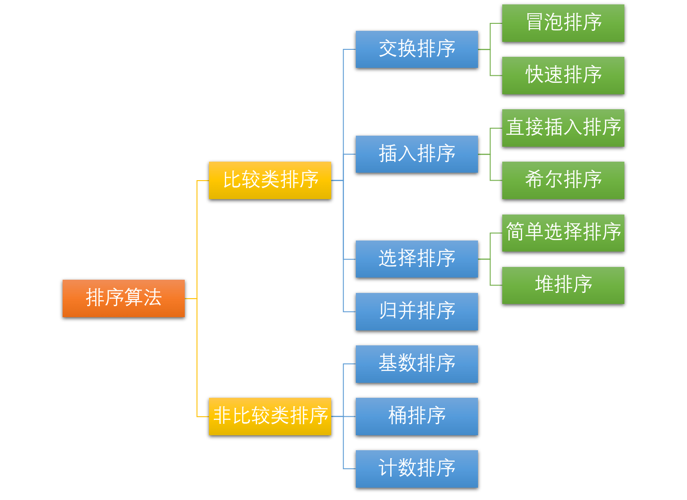
int[] nums = new int[]{1, 3, 4, 7};
Arrays.sort(nums);
List<User> list = new ArrayList<User>();
Collections.sort(list);
n（有序、设置flag表示此趟是否排序）、n^2^、n^2^（逆序）、O(1)。public static void directInsertSort(int[] arr) {
for (int i = 1; i < arr.length; i++) { // 第0个不用排序
int target = arr[i];
int j = i - 1;
for (; j >= 0 && arr[j] > target; j--){ // 防止下界溢出
arr[j + 1] = arr[j]; // 逐个后移
}
// if (j >= 0) {
arr[j + 1] = target; // j最小为-1，此时待插入元素最小，插入0位置
//}
}
}
public static void binaryInsertSort(int[] arr) {
for (int i = 1; i < n; i++) {
int target = arr[i];
// 在已排序序列中二分查找插入位置，相当于在区间[0, i-1]中查找右边界
int pos = binaryRightBound(arr, 0, i-1, target);
// 将pos后、[pos, i - 1]内的元素由后往前、统一逐位后移
for (int j = i - 1; j >= 0 && j >= pos; j--) { // not while, pos = -1
nums[j + 1] = nums[j];
}
// target插入pos位置
arr[pos] = target; // pos == j + 1 >= 0
}
}
// right bound not found, then return min value's index witch greater than target
public static int binaryRightBound(int[] arr, int lo, int hi, int target) {
while (lo <= hi) { // 同二分查找算法框架
// 防止数组下标溢出，2^31 - 1
int mid = lo + (hi-lo)/2;
// 2.找右边界时，收缩左侧边界
if (nums[mid] <= target) {
lo = mid + 1;
} else if (nums[mid] > target) {
hi = mid - 1;
}
}
return lo; // [0, -1] return lo=0
}
基本思想：
gap[i]：n/2 -> 1（步长为 1 即直接插入排序）。nlogn、nlogn?、n^2^、O(n)。[2, 2, 1, 3]。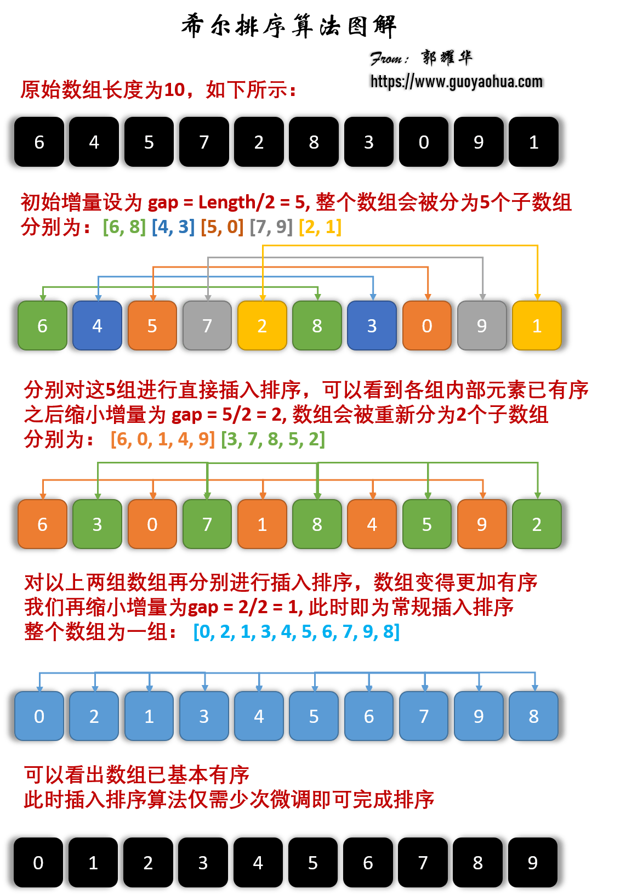
public static void shellSort(int[] nums) {
...
for (int gap = n/2; gap > 0; gap /= 2) { // 步长减半
// 分组内进行直接插入排序，逐个分组排序
for (int i = gap * 1; i < n; i++) {
// gap, gap+1, …, gap*2, gap*2+1, …, n
// 取出各组内第2个元素（总第gap个元素）作为待插入元素；
// 取出各组内第3个元素（总第gap*2个元素）
int target = nums[i];
int pre = i - gap; // 同组的前一个元素的索引
// 同组内i（当前元素）前的元素直接插入排序
while (pre >= 0 && nums[pre] > target) { // &&，相当于插入排序中的for逐个后移
// 比当前元素大的在组内向后移，如第1个覆盖第2个
nums[pre + gap] = nums[pre];
pre -= gap; // 向前迈一个步长
}
nums[pre + gap] = target; // 插入待排序元素
}
}
}
[0，n-i) 范围内冒泡一次，相邻元素两两排序（逆序则交换）作为一趟冒泡，即最大的元素向后冒泡，加入已排序元素的左侧。注意 i、j 的起始取值。n、n^2^、n^2^、O(1)。arr[j-1] >= arr[j]），两个相等的记录就会交换位置，则变为不稳定。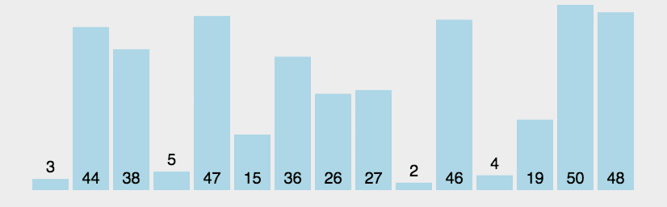
public static void bubbleSort(int[] nums) {
int n = nums.length;
for (int i = 0; i < n; i++) { // [0, n)表示n次排序
boolean runSort = false; // flag 作为一趟冒泡是否发生交换的标志
for (int j = 1; j < n - i; j++) { // 在[0，n-i)范围内冒泡一次，注意j=1
if (nums[j-1] > nums[j]) { // 逆序（前面的大于后面的）
swap(nums, j-1, j); // 则交换
runSort = true; // not i = n, then break from 2-for
}
}
// 若一次交换也没有发生，则跳出循环
if (!runSort) {
break;
}
}
}
pivot（即划分标杆、枢纽、比较子），通过一趟划分（分治法）将序列分隔成两个子序列：比基准元素小的元素都放在其左侧，大的放在右侧，对左右两部分递归。nlgn、nlgn、n^2^（最坏情况为划分不对称，如 [1, 2, 3, 4]，总是取本区间的最大值 4 / 最小值 1 作为 pivot）Θ(lgn)；用双指针、后者覆盖前者的方式代替交换函数。不稳定：待排序数组：int a[] = {2, 2, 1, 3}，在选择 pivot 时，把与基准元素相等的元素放在左边还是右边：
2 作为基准时，第二个 2 会被放在第一个 2 的右边，二者非原序（即不稳定）；2 作为基准时，第一个 2 会被放在第二个 2 的右边，二者非原序（即不稳定）；提高：
public static int partation(int[] nums, int lo, int hi) {
int pivot = nums[lo]; // 取最左一位作为基准，not povit
while (lo < hi) {
while (lo < hi && nums[hi] >= pivot) { // >=, not nums[pivot]
hi--;
}
if (lo < hi) {
nums[lo++] = nums[hi]; // 最左已被作为基准，覆盖最左
}
while (lo < hi && nums[lo] < pivot) { // not > or <=
lo++;
}
if (lo < hi) {
nums[hi--] = nums[lo]; //
}
}
nums[lo] = pivot; // lo即为pivot最终放的index
return lo;
}
public static void quickSort(int[] nums, int lo, int hi) {
if (lo < hi) { // 快排和归并都用此方法控制递归深度
int pos = partation(nums, lo, hi); // partation
quickSort(nums, lo, pos-1); // -1
quickSort(nums, pos+1, hi);
}
}
[i+1, n) 中最小的元素，与未排序序列第一个元素交换，即添加在已排序序列的最后。与冒泡排序的区别是：已排序序列 [0, i] 在前面。n^2^、O(1) 用于数据规模很小时，不占用额外的内存空间。[2, 2, 1, 3]，选择最小的 1，与第一个2交换后，两个2的相对顺序改变了。public static void selectSort(int[] nums) {
int n = nums.length;
for (int i = 0; i < n - 1; i++) { // n-2 趟,第n趟无意义
int mini = i;
// 从下一个位置开始查找，在[i+1, n)内查找
for (int j = i + 1; j < n; j++) {
if (nums[j] < nums[mini]) {
mini = j; // 记录最小值的index
}
}
// 最小值为未排序序列第一个（当前）元素时不移动；提高的效率并不高，可省略
if (mini != i) {
swap(nums, mini, i);
}
}
}
PriorityQueue 即用堆排序实现；基本思想：
i（堆顶从下标 0 开始时，i = (n-1)/2 -> 0 ），按序逐个加入堆 [i, n)，即对所有以非叶节点 i 为根的子树向下调整堆；交换堆顶 a[0] 和（堆底）末尾元素 a[i = n-1->1]；交换后，堆范围为[0, i), i = n-1->0，已排序序列为 [i, n)：
维持剩余堆（[0, i), i = n-1->0）的性质，向下调整新堆（即自顶向下堆化 heapify，使该子树成为堆）：
>= 左右子节点（以该结点为根的子树成为堆）为止；lgn；nlgn、O(1)。不稳定：
public static void heapSort(int[] nums) {
// buildMaxHeap(nums)
for (int i = (n-1)/2; i >= 0; i--) { // not n/2 - 1
adjustDownHeap(heap, i, n); // 自下而上构建大顶堆[i, n)
}
for (int i = n-1; i > 0; i--) { // not n/2-1, not >=
swap(heap, 0, i); // 交换堆顶和堆底
adjustDownHeap(heap, 0, i); // 维持剩余堆的性质，将[0,i)调整为大顶堆, not i-1
}
}
// 自上而下调整大顶堆[root, n)（非递归）while
public static void adjustDownHeap(int[] nums, int root, int n) {
// while 版
int child = root*2+1; // 沿root节点较大的子节点向下调整
while (child < n) {
// 如果左子结点小于右子结点
if (child + 1 < n && nums[child] < nums[child+1]) { // 注意边界child+1
child ++; // 则取右子结点
}
if (nums[root] >= nums[child]) { // not >, 如果堆顶结点最大
break; // 则调整结束
} else {
swap(nums, root, child); // 将大者与父结点交换
root = child; // 将大者作为root，继续向下(递归)调整
child = root*2 + 1;
}
}
// for not swap版，教科书写法
int x = nums[root];
for (int child = 2*root + 1; child < n; child = child*2 + 1) {
....
} else {
nums[root] = nums[child]; // 将大者赋给父结点
root = child;
}
}
nums[root] = x; // 将堆顶节点放到最终位置
}
// 自上而下调整大顶堆（递归）
public static void adjustDownHeap(int[] nums, int root, int n) {
int left = i*2 + 1;
int right = i*2 + 2;
if (left < n && nums[i] < nums[left]) {
swap(nums, i, left);
adjustHeap(nums, left, n);
}
if (right < n && nums[i] < nums[right]) {
swap(nums, i, right);
adjustHeap(nums, right, n);
}
}
1 的 n 个有序子序列，相邻子序列两两归并，合并为长度为 2 的有序子序列，直到合并成长度为 n 的1个有序序列。分治法的典型应用。nlgn、O(n)，需额外的内存空间；稳定。算法步骤：
在递归后序位置进行归并，可使用返回的递归结果：
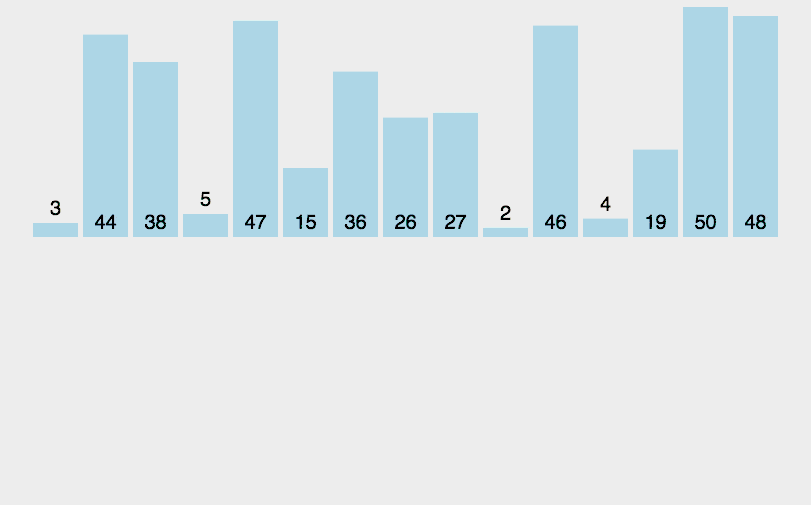
public static void merge(int[] a, int low, int mid, int high) {
// int firstStart, int firstEnd, int secondStart, int secondEnd
//int[] firstCopy = new int(secondEnd - firstStart + 1);
//for (int i = s1; i < e2; i++) {
//c[i] = a[i];
//}
// 改进：先将原数组a复制出来，结果可直接放进a
int[] temp = Arrays.copyOfRange(a, low, high + 1); // [lo, hi+1)
int i = low; // 第一个数组（左半部分）的指针
int j = mid + 1; // 第二个数组的指针
int k = low; // 注意下标不从0开始
// 已排序数组[low, mid] 和 [mid + 1, high]
while (i <= mid && j <= high) { // &&
if (temp[i] < temp[j]) {
a[k++] = temp[i++];
} else {
a[k++] = temp[j++];
}
}
// 把第一个数组剩余的数移入原数组
while (i <= mid) { // [lo, mid], not high
a[k++] = temp[i++];
}
while (j <= high) { // [mid+1, hi]
a[k++] = temp[j++];
}
}
// 在[lo, hi]排序，初始值为[0, n-1]
public static void mergeSort(int[] a, int low, int high) {
// low == high 时只有一个元素
if (low < high) { // not n == 1
int mid = low + (high - low) / 2;
// 左边
mergeSort(a, low, mid); // not mid-1, n/2-1);
mergeSort(a, mid + 1, high); // not mid
// 左右归并
merge(a, low, mid, high);
// System.out.println(Arrays.toString(a));
}
}
核心思想：
A[i] 作为数组 C 的下标 j，即第 j 个元素是待排序数组 A 中值等于 j 的元素的个数（类似于扑克插牌）；根据 C 将 A 中的元素从后向前排到正确的位置。算法步骤：
C，长度是 max+1 或 max-min+1，有助于节省新数组占用空间，默认值都为 0；A，统计每个值为j的元素（j = nums[i]或j = nums[i] - min ）出现的次数 cnt，存入 count[j] = cnt；count 的 前缀和：对所有的计数累加，新元素的值是该元素与前一个元素值的和，即当 j>1 时 preCount[j] = count[j] + preCount[j-1]，此处代码中 preCount 仍为 count，表示原地求前缀和；re，长度和原始数组 A 一致；A ，利用前缀和，从右至左计算每个数的排名。反向填充结果数组：将 nums[i] 放在结果数组 re 中的preCount[j]-1 位置，preCount[j] -= 1。
n + max； O(k)，需额外的内存空间；稳定。
public static int[] countingSort(int[] nums) {
if (n < 2) return nums;
// Arrays.sort(nums);
int[] extremum = getMinAndMax(nums);
int min = extremum[0];
int max = extremum[1];
// int min = Collections.min(Arrays.asList(nums));
int len = max - min + 1; // 元素大小的极值差，用于减小数组count的大小
// int count[len+1] = 0;
int[] count = new int[len+1];
int[] re = new int[n];
for (int num : nums) {
int j = num - min; // 减去极差
count[j] += 1; // 初始化数组，（1表示值为j的元素有1个），统计值为j的元素个数
}
for (int j = 1; j <= len; j++) { // len = count.length - 1
count[j] += count[j-1]; // 原数组求前缀和，count[j-1]表示偏移量
}
// 关键
for (int i = n - 1; i >= 0; i--) {
int j = count[i] + min - 1; // -1，前缀和是为了求元素在最终结果re的索引j
re[j] = count[i];
count[i+1] -= 1; // i+1处元素数量-1
}
return re;
}
// 方法一，不好
public static int[] getMinAndMax(int[] arr) {
int maxValue = arr[0];
int minValue = arr[0];
for (int i = 0; i < arr.length; i++) {
if (arr[i] > maxValue) {
maxValue = arr[i];
} else if (arr[i] < minValue) {
minValue = arr[i];
}
}
return new int[] { minValue, maxValue };
}
// 方法二
public static int[] getMinAndMax(List<Integer> arr) {
int maxValue = arr.get(0);
int minValue = arr.get(0);
for (int i : arr) {
if (i > maxValue) {
maxValue = i;
} else if (i < minValue) {
minValue = i;
}
}
return new int[] { minValue, maxValue };
}
算法步骤：
N，如：数组中最大值为 1000，则 N = 4；radix 数组；radix 进行计数排序；radix 依次赋值给原数组；2~4 步骤 N 次。O(n x k)，k 为数组中元素的最大位数；需额外的内存空间； 稳定。public static int[] radixSort(int[] arr) {
if (arr.length < 2) {
return arr;
}
int maxValue = arr[0];
for (int element : arr) {
if (element > maxValue) {
maxValue = element;
}
}
int N = (int)(Math.log10(maxValue) + 1);
/*
int N = 0;
while (maxValue != 0) {
maxValue /= 10;
N += 1;
}
*/
for (int i = 0; i < N; i++) {
// 第i位初始化
List<List<Integer> > radix = new ArrayList<>();
// 第i位有10种取值
for (int k = 0; k < 10; k++) {
radix.add(new ArrayList<Integer>());
}
// 收集
for (int element : arr) {
// 取第i位的数字
int idx = (element / (int)Math.pow(10, i) ) % 10;
radix.get(idx).add(element);
}
// 赋给原数组
int idx = 0;
for (List<Integer> list : radix) {
for (int x : list) {
arr[idx++] = x;
}
}
}
}
桶排序是5.1计数排序的升级版。利用了函数的映射关系，高效与否的关键在于映射函数。为了更高效：
N 个数据均匀的分配到 K 个桶中；算法步骤：
BucketSize：每个桶的容量；n+k、n^2^、n+k； O(k)，需额外的内存空间；
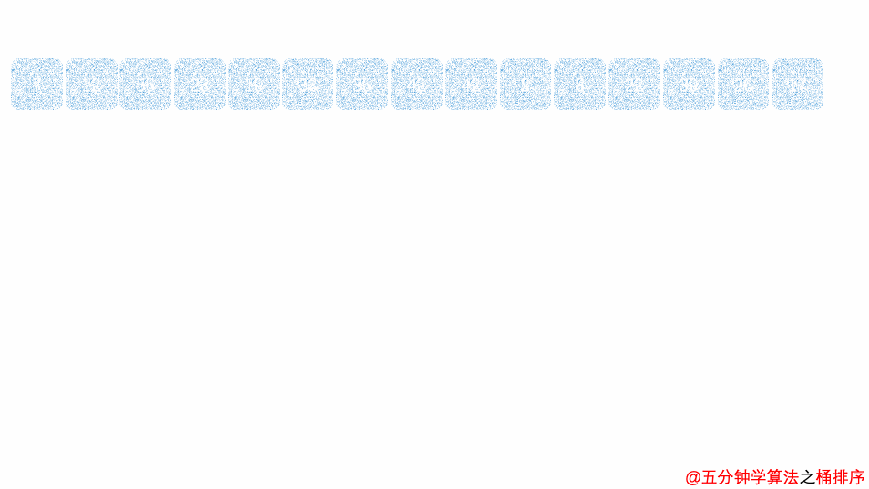
public static List<Integer> bucketSort(List<Integer> arr, int buketSize) {
int n = arr.length;
if (n < 2 || buketSize == 0) return arr;
int[] extremum = getMinAndMax(arr);
int min = extremum[0];
int max = extremum[1];
// 桶个数，向下取整
int bucketCnt = (int)Math.floor((max-min) / buketSize) + 1;
List<List<Integer> > buckets = new ArrayList<>();
for (int i = 0; i < bucketCnt; i++) {
buckets.add(new ArrayList<Integer>()); // 创建桶
}
for (Integer el : arr) {
int j = (el - min)/bucketSize; // idx
buckets.get(j).add(el); // 放进桶里
}
List<Integer> re = new ArrayList<>();
// int index = 0;
for (int i = 0; i < buckets.size(); i++) {
List<Integer> bkt = buckets.get(i);
if (bkt.size > 1) {
insertSort(bkt); // 桶内插入排序
}
for (Integer k : bkt) {
re.add(k); // 将排好序的数据，放回原来的序列中
// index++;
}
}
return re;
}
外归并排序（External merge sort）：读入一些能放在内存内的数据量，在内存中排序后输出为一个顺串（即内部数据有序的临时文件），处理完所有的数据后再进行归并。如，要对 900 MB 的数据进行排序，但机器上只有100 MB的可用内存时，按如下操作：
基本思想：减而治之（减治）思想，逐渐（减半）缩小问题规模。
Arrays.sort(nums);
// 必须有序
int index = Arrays.binarySearch(nums, [0, nums.length,] target);
target 的下标；用于折半插入排序、二叉查找树等；
f(x) == target 时自变量、下标 x 的取值范围（即搜索区间）；O(log n)、log(n)；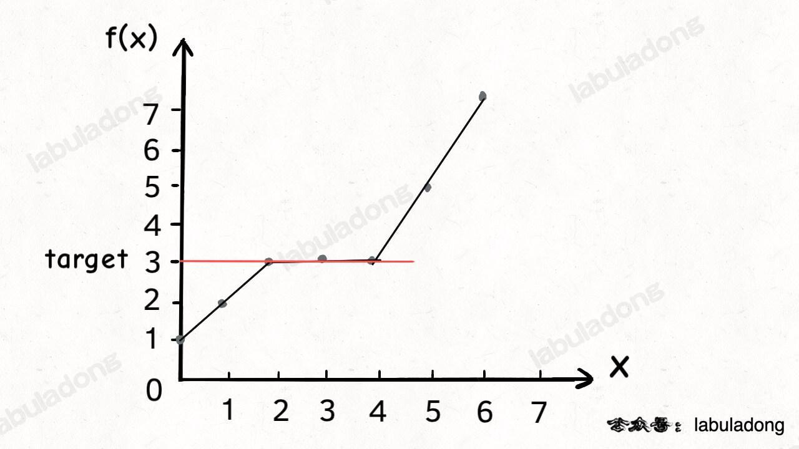
nums = [2,3,5,7] 中搜索 target = 4，搜索左边界的二分算法返回 2；左边界也可理解为：【】
nums 中大于等于 target 的最小元素索引；target 应在 nums 中插入的索引位置；nums 中小于 target 的元素个数。repeatTime = lastPos - firstPos + 1;m1 + m2 是奇数时，是合并数组的第 (m1 + m2)/2 + 1个元素；m1 + m2 是偶数时，是第 (m1 + m2)/2和第 (m1 + m2)/2 + 1 个元素的平均值（/2.0）。k = (m1 + m2)/2；log(m1 + m2)；
k 小的元素：
k/2 大的数，对比，小的表明该数组的前 k/2 个数字都不是第 k 小数字，可舍弃；k自减(j-i) + 1长度，指向较小值的指针后移j + 1位，直到到达中位数的位置（k=1时，返回两数组较小的一个）。如果一个指针已到达数组末尾，则中位数一定在另一数组。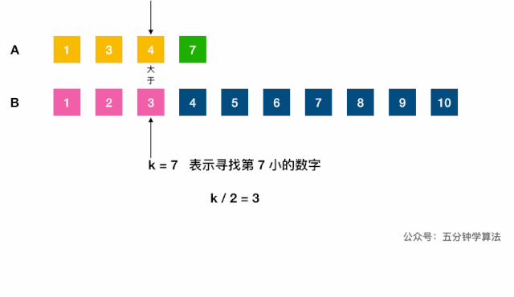
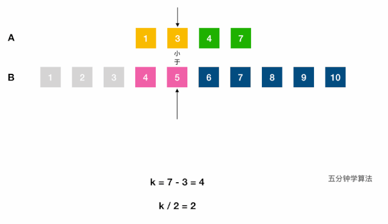
剑指 Offer 11.旋转数组的最小数字：二分查找左边界的变体，把数组最开始的若干个元素搬到末尾，target > 前面的数字。[l, r)
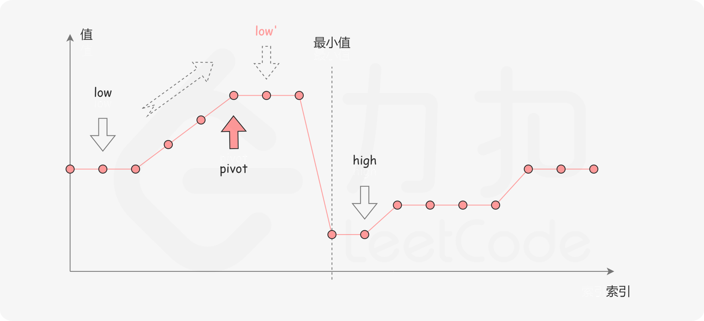
常用
[begin,end)表示左闭右开，[left, right]、[from, to]表示左闭右闭，范围包括左右端点。
// leftBound()
// searchFistPos()
int binarySearch(int[] nums, int target) {
int result = -1;
int n = nums.length;
if (n <= 0) return -1; //
int left = 0;
int right = n-1; // 查找区间为[left, right]，left = right + 1 时搜索区间为空，故while条件为l <= r。推荐。
// //int right = n; // 查找区间为[left, right)，left = right 时搜索区间为空，故while条件为l < r；不采用
// 终止条件是查找区间为[]时，表示在区间里只剩下一个元素时仍需继续查找
while (left <= right) {
// 防溢出，int signed 4byte 32bit ~2^31-1 ~21亿，取left = right = 2^31-2
int mid = left + (right - left) / 2;
int num = nums[mid];
// 若中间值小于目标值
if (num < target) {
// 则左边界向右收缩，搜索区间变为[mid + 1, right]
left = mid + 1;
} else if (num > target) {
// 右边界向左收缩
right = mid - 1;
// //[left, right)，当 nums[mid] 被检测后，下一步应去 mid 的左侧[left, mid)或右侧区间[mid + 1, right)搜索，不采用
// //left = mid + 1; right = mid;
} else {
// 0.当 nums[mid] == target 时立即返回
result = mid;
break;
// 1.找左边界时，当中间值和目标值相等时，右边界也需向左收缩，最终达到left锁定左边界的目的。
right = mid - 1;
// 2.找右边界时，收缩左侧边界
left = mid + 1;
}
}
// 0.二分查找，未找到
return result;
// 1.找左边界时，检查 left 是否越界、是否未找到目标值（未找到时left == right+1，查找区间为[]）
if (left >= n || nums[left] != target) { return -1; }
return left;
// 2.找右边界时，检查 right 是否越界
if (right < 0 || nums[right] != target) { return -1; }
return right;
}
见数据结构文档 #二叉树部分、MySQL 文档 #存储引擎部分。
见数据结构文档。
见字符串中的滑动窗口
分治（Divide and Conquer）：问题分而治之；
所有递归算法的本质上都是二叉树的遍历。
递归 VS 迭代：都是循环中的一种。
迭代：函数内某段代码实现循环，与普通循环的区别：将本次循环的输出作为下次循环的输入；循环代码中参与运算的变量同时是保存结果的变量，作为下一次循环的初始值。
mid 更新查找区间 [left, right]；递归（Recursion）：重复调用函数自身实现循环。还指重复将问题分解为同类的子问题而解决问题的方法。
缺点是：递归层数过多时，会造成栈溢出。
打印递归树：
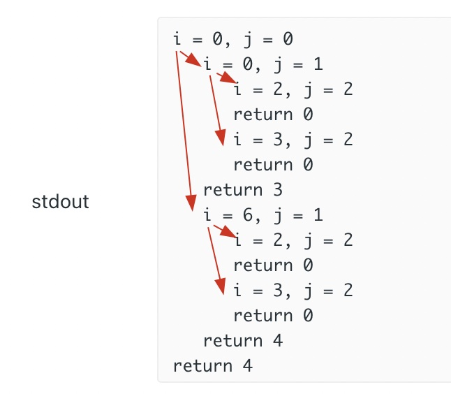
// 打印缩进和i、j来debug递归
int count = 0;
void printIndent(int n) {
while (n-- > 0)) {
System.out.print("\t");
}
}
int dp(string& ring, int i, string& key, int j) {
// printIndent(count++);
// printf("i = %d, j = %d\n", i, j);
if (j == key.size()) {
// printIndent(--count);
// printf("return 0\n");
return 0;
}
int res = INT_MAX;
for (int k : charToIndex[key[j]]) {
res = min(res, dp(ring, j, key, i + 1));
}
// printIndent(--count);
// printf("return %d\n", res);
return res;
}
BFS 也是一种暴力穷举算法，必须掌握。本质就是二叉树的层序遍历，适合解决最短路径问题。
start 到终点 target 的最短距离；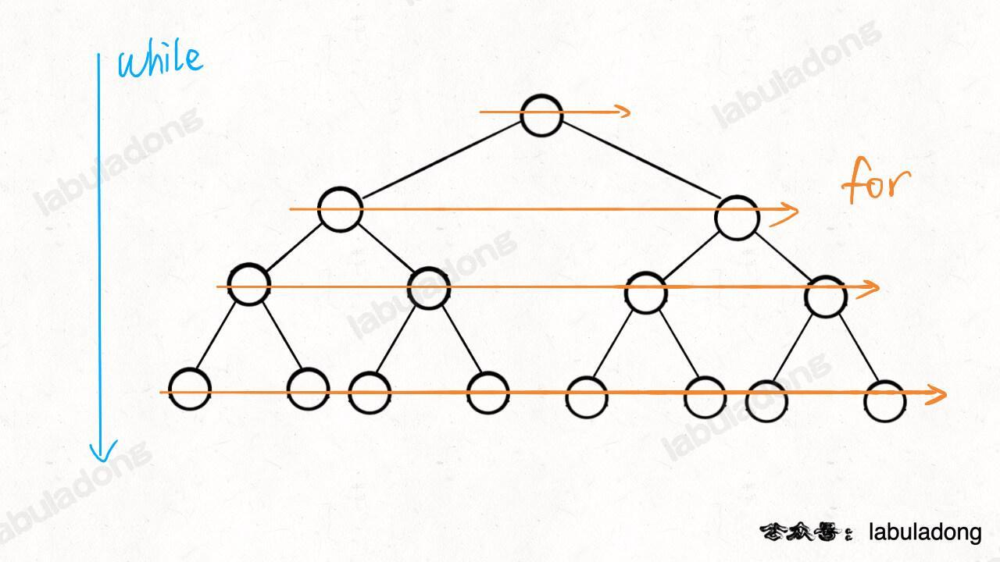
// BFS 遍历树：计算从起点 start 到终点 target 的最近距离
int BFSTree(Node start, Node target) {
int step = 0; // 记录扩散的步数
if (start == null) {
return step;
}
// 核心数据结构
Queue<Node> q = new LinkedList<>();
// 图避免走回头路，一般的二叉树结构没有子节点到父节点的指针，不会走回头路
Set<Node> visited = new HashSet<>();
q.offer(start); // 将起点加入队列
visited.add(start);
while (!q.isEmpty()) {
// 划重点：更新步数，记录层数
step++;
int sz = q.size();
// 将当前队列中的所有节点向四周扩散，遍历一层，按层从左到右遍历树
for (int i = 0; i < sz; i++) {
Node cur = q.poll();
// 判断是否到达终点
if (cur is target)
return step;
// 将 cur 的相邻节点加入队列
for (Node x : cur.adj()) {
if (x not in visited) {
q.offer(x);
visited.add(x);
}
}
}
}
return step;
}
分类的稍微有点粗糙了，没有细分出回溯/分治来
回溯算法：实际上就是多叉决策树的 DFS 遍历，关键是在前序和后序位置做一些操作。本质是：走不通就回头。回溯算法是一种纯粹的暴力穷举算法，必须掌握。
DFS 算法：本质上是一种暴力穷举算法，为图论中的概念。回溯算法是在遍历树枝，DFS 算法是在遍历节点。
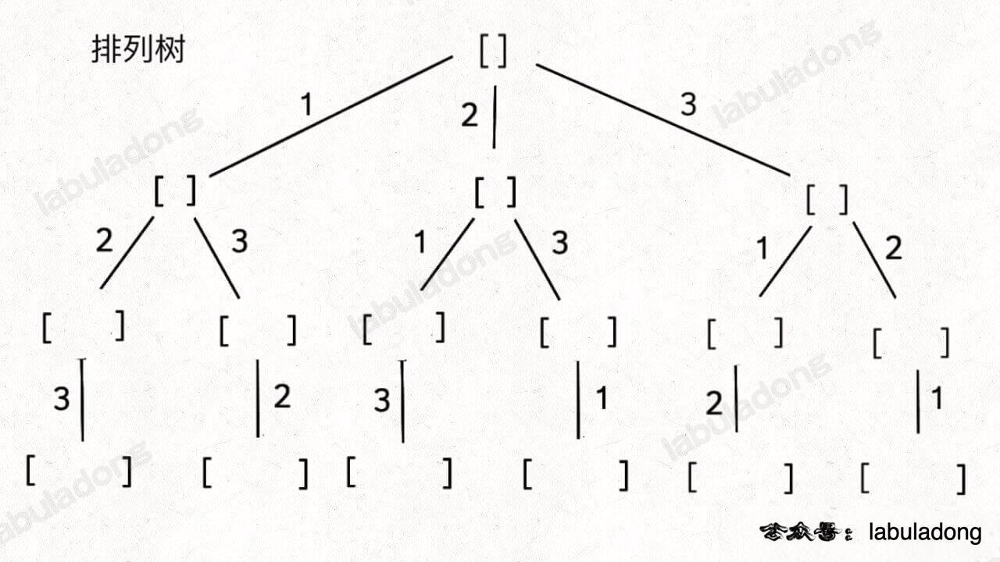
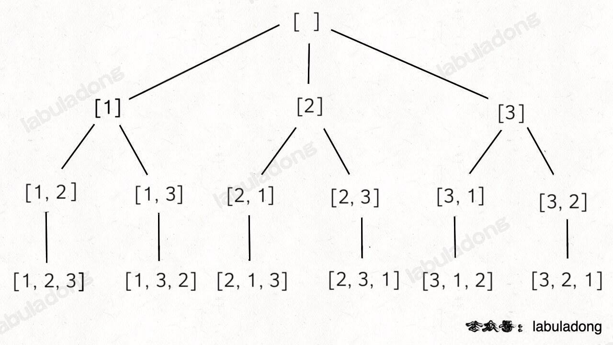
元素可重不可复选【】，即 nums 中的元素可以存在重复，每个元素最多只能被使用一次。
以组合为例，如果输入 nums = [2,5,2,1,2]，和为 7 的组合应该有两种 [2,2,2,1] 和 [5,2]。
元素无重可复选【】，即 nums 中的元素都是唯一的，每个元素可以被使用若干次。以组合为例，如果输入 nums = [2,3,6,7]，和为 7 的组合应该有两种 [2,2,3] 和 [7]。
n 层的所有节点就是大小为 n 的所有子集组合/子集树：
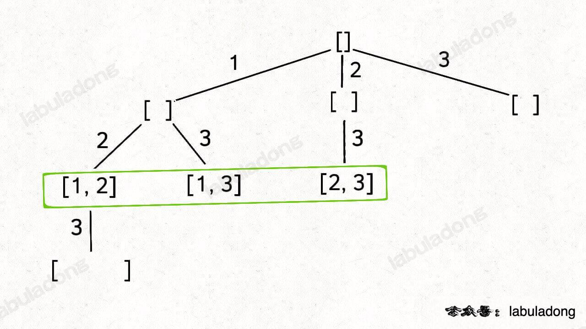
51.N 皇后：空间换时间【】
200.岛屿数量：将二维矩阵抽象成网状的图，每个节点和周围的四个节点连通，用 DFS 算法把遇到的岛屿「淹了」，避免维护 visited 数组。
站在回溯树的一个节点上，只需思考 3 个问题：
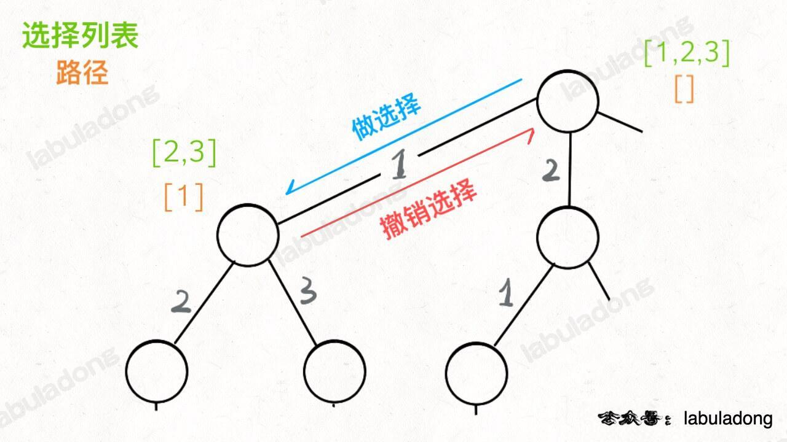
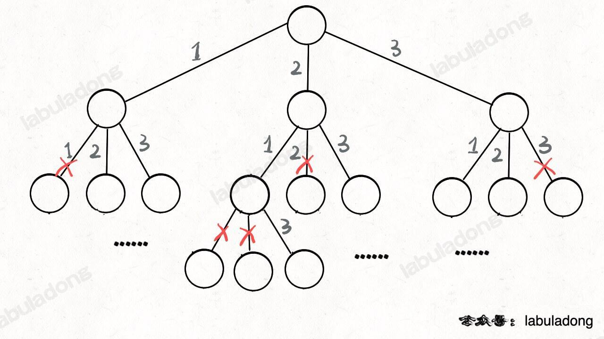
另见层序遍历二叉树
List<List<Integer> > res = new LinkedList<>();
// 排列
public List<List<Integer> > permute(int[] nums) {
// 一个排列，记录路径
LinkedList<Integer> track = new LinedList<>();
// 标记已走过路径中的元素，避免重复使用
backtrack(nums, track, used);
return res;
}
// 回溯
private void backtrack(int[] nums, 路径track, 选择列表) {
if 满足结束条件:
result.add(路径)
return
for 选择 in 选择列表:
# 做选择
将该选择从选择列表移除
路径.add(该选择) # 记录路径
// 核心是递归
backtrack(路径, 选择列表)
# 可重复做选择的情况，撤销选择
路径.remove(选择)
将该选择再加入选择列表
// 组合
for (int i = start; i < nums.size(); i++) {
// 做选择
track.push_back(nums[i]);
// 回溯
backtrack(nums, i + 1, track);
// 撤销选择
track.pop_back();
}
}
贪心思路：每一步总是选取最优的操作，只看眼前，不考虑以后可能造成的影响。
每道题都不一样，没有通用解法。在有最优子结构的问题中尤为有效。
与动态规划的不同：在于对每个子问题的解决方案都做出选择，不能回退。动态规划则会保存以前的运算结果，用于对当前进行选择，有回退功能。
i 可加 gas[i] 的油（绿色），离开站点会损耗 cost[i] 的油（红色），那么可把站点和与其相连的路看做一个整体，将 change[i] = gas[i] - cost[i] 作为经过站点 i 的油量变化值（橙色）。start，使从此开始的累加和一直>= 0。累加和的最低点最有可能作为起点。若sum(gas[i] - cost[i]) < 0，即sum(gas[...]) < sum(cost[...])，总油量小于总消耗，无法环游所有站点，无解；否则原点即为所求。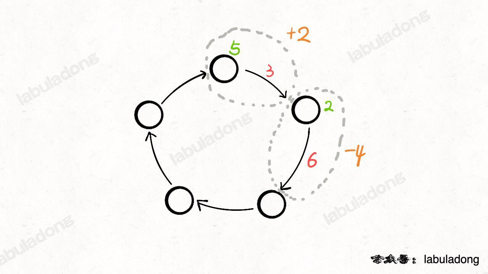
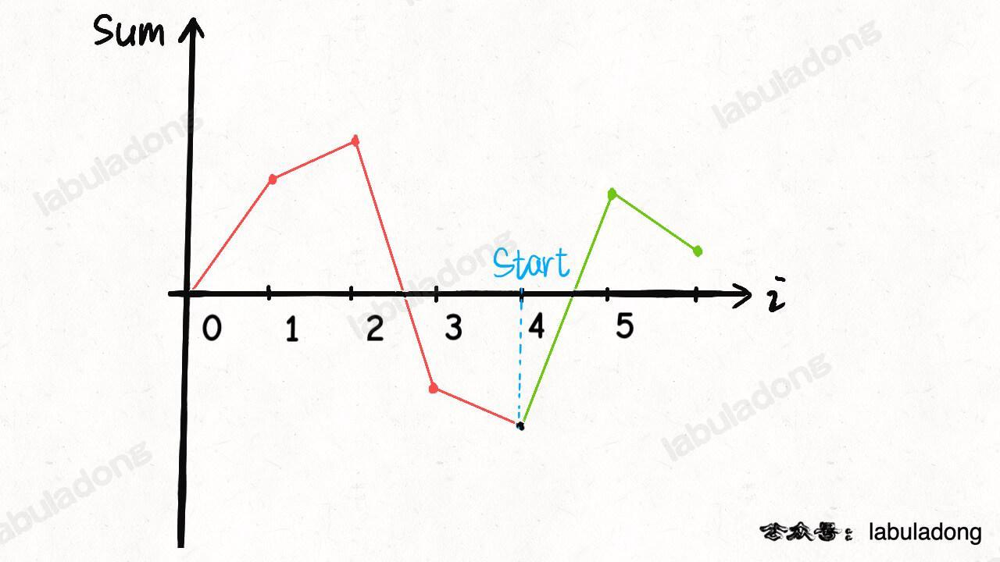
贪心解法：如果从 i 出发无法走到 j，那么 i 及 i, j 间的所有站点都不可能作为起点。
核心思想：如何聪明地穷举求最值。本质上是穷举「状态」，做「选择」找最优解。
动态规划的暴力穷举解法一般是递归形式，优化方法非常固定，要么是添加备忘录，要么是改写成迭代形式。
f(1) 和 f(2) 推出 f(20)。dp 数组的下标/key ；如目标金额 n。n 减少了对应的 1、2、5 元。dp 数组/函数的含义：一般 { key / 参数， value / 函数返回值 } = { 状态，题目要求计算的量/做选择的（最少）次数}。如 { 目标金额 n，凑出 n 所需的最少硬币数量 / 至少需 dp[n] 枚硬币凑出}。子序列 != 子串
子序列：不改变剩余字符顺序的情况下，删除某些字符或不删除任何字符形成的一个序列。另外定义见回文串。
双字符串动态规划（大多为二维）
dp[i][j] 的含义是 s1[0..i-1] 和 s2[0..j-1] 的 LCS 长度；s1[0..m-1] 和 s2[0..n-1] 的 lcs 长度，即 dp[m][n]；base case: dp[0][..] = dp[..][0] = 0 ；72.最小编辑距离：将 word1 转成 word2 所使用的最少操作数 。【】
dp 数组：dp[i-1][j-1] 存储 s1[0..i] 和 s2[0..j] 的最小编辑距离。dp 数组索引至少是 0，所以索引会偏移一位。


516.最长回文子序列：区间 DP 与划分型 DP，在子串 s[i,j] 中，最长回文子序列的长度为 dp[i][j]；上一个可能的状态如下图：
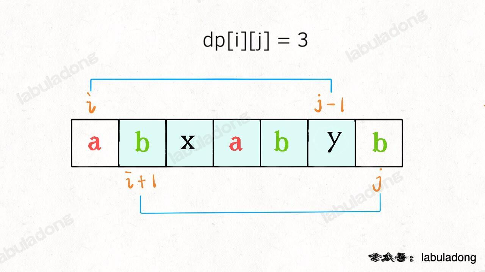
（一维）剑指 Offer 42.连续子数组的最大和、53.最大子数组和【】
dp[i] = Math.max(dp[i], dp[j] + 1)0、1、2 的情况，但大量的重复计算会导致内存溢出；dp 数组通过消除递归得到迭代（递推）解法：（滚动数组）re0、re1交替前进，注意最值取模 1e9+7、10,0000,0007 防止溢出。剑指 Offer 10-II.青蛙跳台阶、爬楼梯问题：重复子问题，滚动数组。
dp[n] = dp[n-1]*1 + dp[n-2]*1;n 级台阶的方法个数等于爬到 n-1 的方法个数和爬到 n-2 的方法个数之和。322.零钱兑换、剑指 Offer II 103. 最少的硬币数目：见 动态规划算法框架，最优子结构、如何列出状态转移方程【】
分割问题：416.分割等和子集：【】
先对集合求和，得出 sum，把问题转化为背包问题：背包容量为 sum / 2 和 N 个物品，每个物品的重量为 nums[i]。
dp 数组的定义：dp[i][j] = x 表示，对于前 i 个物品，当前背包的容量为 j 时，若 x 为 true，则说明可恰好将背包装满，若 x 为 false，则说明不能恰好将背包装满。
0-1 背包问题：每个物体只有两种可能的状态（取与不取），对应二进制中的 0 和 1【重要】

各种玩小游戏
二维动态规划：121.买卖股票的最佳时机、剑指 Offer 63. 股票的最大利润：dp[i][k][0 or 1] 表示从第 i 天的这笔交易中获取的最大利润，0 和 1 代表是否持有股票， 0 <= i < n, 1 <= k <= K，k 为交易次数（大 K 为交易数上限）。
特化到 k = 1 买入或卖出一次的情况：
状态转移方程：max(今天选择 rest, 今天选择 sell);
今天未持有股票，对于昨天来说，有两种可能，从中求最大利润：
1、昨天未持有，今天选择 rest 休息，仍未持有；
2、昨天持有，今天选择 sell，未持有股票。
dp[i][0] = max(dp[i-1][0], dp[i-1][1] + prices[i]);
今天持有股票，有两种可能，从中求最大利润：
1、昨天就持有股票，今天选择 rest，今天仍持有股票；
2、昨天本没有持有，但今天选择 buy，持有了股票。
dp[i][1] = max(dp[i-1][1], -prices[i]);
// 即前一天没有持有股票时、使dp[i-1][0]=0，今天选择买入则利润为-prices[i]
base case：
dp[0][0] = 0;
dp[0][1] = -prices[i]; // Integer.MIN_VALUE;负数表示买入
// 一、递归（可看做动态规划函数），推荐
int[] dp;
// 返回要凑出金额 amount 至少需要的硬币数
int coinDp(int[] coins, int amount) {
if (amount < 0) return -1;
// base case
if (amount == 0) return 0;
// 查备忘录，防止重复计算
if (dp[amount] != dp.length) {
return dp[amount];
}
int res = Integer.MAX_VALUE;
// 遍历当前状态的所有取值,1、2、5
for (int coin : coins) {
// 计算子问题的结果
// amount - coin表示扣除当前面额，还需凑的金额
int subProblem = coinChange(coins, amount - coin);
// 子问题无解则跳过
if (subProblem == -1) continue;
// 在子问题中选择最优解，加1表示当前这枚硬币，面额可能为1、2、5
res = Math.min(res, subProblem + 1);
}
// 未正好凑出金额amount，则返回-1，把计算结果存入备忘录
dp[amount] = (res == Integer.MAX_VALUE) ? -1 : res;
return dp[amount];
}
int coinChange(int[] coins, int amount) {
// coins表示硬币面额，可取1、2、5
dp = new int[amount + 1];
// dp 数组全都初始化为特殊值
Arrays.fill(dp, amount + 1);
return dp(coins, amount);
}
// 二、动态规划数组
int coinChange(int[] coins, int amount) {
int[] dp = new int[amount + 1];
// dp 数组全都初始化为特殊值，如 amount + 1，数组大小也为 amount + 1，
// 因凑成 amount 金额的硬币数最多只可能等于 amount（全用 1 元），永远不可能为 amount + 1;
// 若初始化为 Integer.MAX_VALUE 的话，dp[i-coin] + 1 会导致整型溢出。
Arrays.fill(dp, amount + 1);
dp[0] = 0;
// 遍历所有状态
for (int i = 0; i < dp.length; i++) {
// 遍历当前状态的所有取值，1、2、5求所有选择的最小值
for (int coin : coins) {
// dp下界溢出，子问题无解，跳过
if (i - coin < 0) {
continue;
}
dp[i] = Math.min(dp[i], 1 + dp[i - coin]);
}
}
return (dp[amount] == amount + 1) ? -1 : dp[amount];
}
^【】应用：
从本质上看，LRU 和 LFU 的核心差异是判断价值的维度不同：
在 Redis 中，两者都做了性能优化（近似实现），选择时不用纠结 理论完美性，
LRU（Least Recently Used）最近最少使用策略：优先删除、淘汰最久未使用的数据，即上次被访问时间距离现在最久的数据。
可以保证内存中的数据都是热点数据（经常被访问的数据），从而保证缓存命中率。
例如：电脑桌面上放着常用的软件图标（微信、IDE），这些是最近常用的；而几个月没打开过的压缩工具，会被你拖到文件夹里。
缓存：
[B,C,A]LRU 适合短期高频场景，比如：
allkeys-lru和volatile-lru是基于 LRU 的（实际是 “近似 LRU”，性能更高），适合 “缓存访问具有短期局部性” 的场景（比如电商商品详情页，用户打开后短时间内可能再次刷新）；优点：
缺点：
LinkedHashMap的实现（双向链表和哈希表的结合体）淘汰尾部 or 头部？
LinkedHashMap本质是哈希表 + 双向链表，但如果想深入理解 LRU 的实现原理，建议自己手写一个。
import java.util.HashMap;
import java.util.Map;
publicclass LRUCache2<K, V> {
// 双向链表节点：存储key、value，以及前后指针
staticclass Node<K, V> {
K key;
V value;
Node<K, V> prev;
Node<K, V> next;
public Node(K key, V value) {
this.key = key;
this.value = value;
}
}
private final int maxCapacity;
private final Map<K, Node<K, V>> map; // 哈希表：key→Node，O(1)查询
private final Node<K, V> head; // 虚拟头节点（简化链表操作）
private final Node<K, V> tail; // 虚拟尾节点
public LRUCache2(int maxCapacity) {
this.maxCapacity = maxCapacity;
this.map = new HashMap<>();
// 初始化虚拟头尾节点，避免处理null指针
this.head = new Node<>(null, null);
this.tail = new Node<>(null, null);
head.next = tail;
tail.prev = head;
}
// 1. 获取缓存：命中则把节点移到链表头部（标记为最近使用）
public V get(K key) {
Node<K, V> node = map.get(key);
if (node == null) {
returnnull; // 未命中
}
// 移除当前节点
removeNode(node);
// 移到头部
addToHead(node);
return node.value;
}
// 2. 存入缓存：不存在则新增，存在则更新并移到头部；满了则删除尾部节点
public void put(K key, V value) {
Node<K, V> node = map.get(key);
if (node == null) {
// 新增节点
Node<K, V> newNode = new Node<>(key, value);
map.put(key, newNode);
addToHead(newNode);
// 缓存满了，删除尾部节点（最近最少使用）
if (map.size() > maxCapacity) {
Node<K, V> tailNode = removeTail();
map.remove(tailNode.key); // 同步删除哈希表中的key
}
} else {
// 更新节点值，并移到头部
node.value = value;
removeNode(node);
addToHead(node);
}
}
// 辅助：把节点添加到链表头部
private void addToHead(Node<K, V> node) {
node.prev = head;
node.next = head.next;
head.next.prev = node;
head.next = node;
}
// 辅助：移除指定节点
private void removeNode(Node<K, V> node) {
node.prev.next = node.next;
node.next.prev = node.prev;
}
// 辅助：移除尾部节点（最近最少使用）
private Node<K, V> removeTail() {
Node<K, V> tailNode = tail.prev;
removeNode(tailNode);
return tailNode;
}
// 测试
public static void main(String[] args) {
LRUCache2<Integer, String> cache = new LRUCache2<>(3);
cache.put(1, "A");
cache.put(2, "B");
cache.put(3, "C");
System.out.println(cache.get(1)); // 输出A，此时1移到头部
cache.put(4, "D"); // 淘汰3
System.out.println(cache.get(3)); // 输出null（已被淘汰）
}
}
LinkedHashMap（双向链表和哈希表的结合体）
LinkedHashMap自带按访问顺序排序的功能，只需重写removeEldestEntry方法，就能实现 LRU 缓存。这是最简洁的实现方式，适合业务中不需要极致性能的场景，快速开发。O(1) 时间访问链表的任意元素。定位到链表中的节点，从而取得对应 val、插入和删除。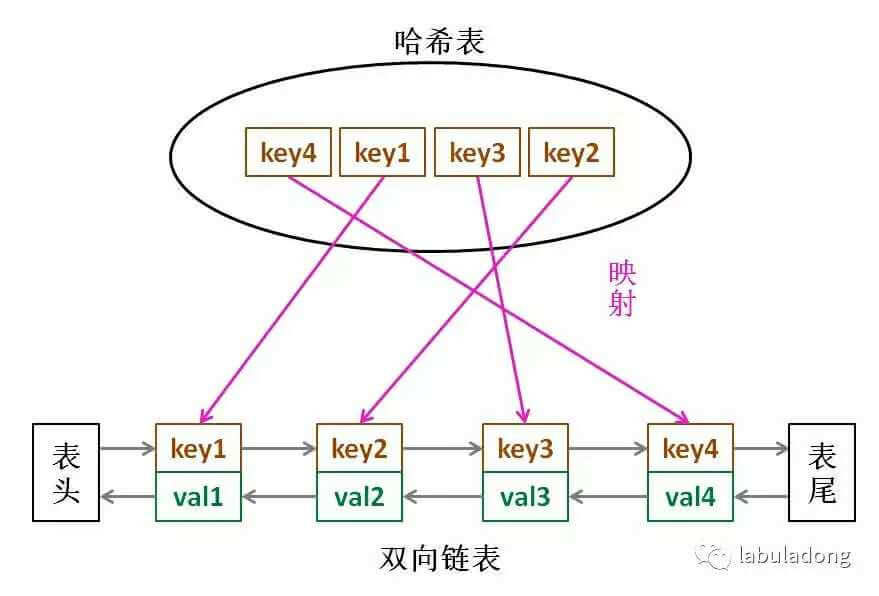
import java.util.LinkedHashMap;
import java.util.Map;
publicclass LRUCache<K, V> extends LinkedHashMap<K, V> {
// 缓存最大容量
private final int maxCapacity;
// 构造函数：accessOrder=true 表示“按访问顺序排序”（核心）
public LRUCache(int maxCapacity) {
super(maxCapacity, 0.75f, true);
this.maxCapacity = maxCapacity;
}
// 核心：当缓存大小超过maxCapacity时，自动删除“最老的 entry”（最近最少使用的）
@Override
protected boolean removeEldestEntry(Map.Entry<K, V> eldest) {
return size() > maxCapacity;
}
// 测试
public static void main(String[] args) {
LRUCache<Integer, String> cache = new LRUCache<>(3);
cache.put(1, "A");
cache.put(2, "B");
cache.put(3, "C");
System.out.println(cache); // 输出：{1=A, 2=B, 3=C}（插入顺序）
cache.get(1); // 访问1，1变成最近使用
System.out.println(cache); // 输出：{2=B, 3=C, 1=A}（按访问顺序排序）
cache.put(4, "D"); // 缓存满了，淘汰最老的2
System.out.println(cache); // 输出：{3=C, 1=A, 4=D}
}
}
LFU（Least Frequently Used）最不经常使用策略：优先淘汰一段时间内使用次数最少的数据。
使用频率，而不是使用时间。HashMap 存储访问频率。生活例子：
手机里的 APP，微信、抖音是高频使用的（每天打开几十次），而指南针是低频使用的（几个月打开一次）。
当手机内存不足时，系统会优先卸载指南针这类低频 APP，这就是 LFU 的思路。
缓存：
优点：
缺点：
基于哈希表 + 优先级队列
LFU 的实现比 LRU 复杂，核心需要两个哈希表：
cache：key→Node（存储 value 和使用频率、最后使用时间）；freqMap：频率→LinkedHashSet（存储该频率下的所有 key，LinkedHashSet 保证插入顺序，用于处理频率相同的情况）；
minFreq记录当前最小频率，快速找到最该淘汰的 key。Redis 作为缓存数据库，当内存达到内存maxmemory限制时，会触发内存淘汰策略，其中LRU和LFU是最常用的两种。
但 Redis 的实现并非 “严格版”，而是做了性能优化的 “近似版”， 这一点尤其需要注意。
Redis 的 LRU 实现：近似 LRU（性能优先）
Redis 没有采用 “双向链表 + 哈希表” 的标准 LRU 实现，因为会增加内存开销和操作复杂度，而是用随机采样 + 时间戳实现近似 LRU：
lru字段（最后一次访问的时间戳），当需要淘汰 key 时，Redis 会从所有候选 key 中随机采样 N 个（默认 5 个，可通过maxmemory-samples配置），然后淘汰这 N 个中lru值最小（最久未使用）的 key。相关配置：
# 淘汰所有key中最久未使用的
maxmemory-policy: allkeys-lru
# 只淘汰设置了过期时间的key中最久未使用的
maxmemory-policy: volatile-lru
# 采样数（默认5，范围3-10）
maxmemory-samples: 5
Redis 的 LFU 实现，结合频率与时间衰减。
Redis 4.0 引入了 LFU 策略，解决了标准 LFU 的频率老化问题，实现更贴合实际业务：
核心改进：
lfu_count记录访问频率（但不是简单累加，而是用对数计数：访问次数越多，lfu_count增长越慢，避免数值过大）；lfu_decay_time控制频率衰减（单位分钟），如果 key 在lfu_decay_time内没有被访问，lfu_count会随时间减少，避免过去高频但现在不用的 key 长期占用缓存。lfu_count最小的（频率最低）；若频率相同，淘汰最久未使用的（结合 LRU 逻辑）。相关配置：
# 淘汰所有key中访问频率最低的
maxmemory-policy: allkeys-lfu
# 只淘汰设置了过期时间的key中访问频率最低的
maxmemory-policy: volatile-lfu
# 频率衰减时间（默认1分钟，0表示不衰减）
lfu-decay-time: 1
# 初始频率（新key的lfu_count，默认5，避免新key被立即淘汰）
lfu-log-factor: 10
| 维度 | Redis LRU | Redis LFU |
|---|---|---|
| 判断依据 | 最后访问时间（越久未用越可能被淘汰） | 访问频率（频率越低越可能被淘汰，结合时间衰减） |
| 适用场景 | 短期局部性访问（如用户会话、临时数据） | 长期高频访问（如热点商品、基础配置） |
| 应对突发访问 | 弱（易被一次性访问挤掉常用 key） | 强（低频的突发访问 key 不会淘汰高频 key） |
| 冷启动友好度 | 较好（新 key 只要最近访问就不会被淘汰） | 需配置lfu-log-factor（避免新 key 因初始频率低被淘汰） |
| 内存 overhead | 低（只存时间戳） | 稍高（存频率和时间衰减信息） |
| 典型业务案例 | 新闻 APP 的最近浏览列表 | 电商首页的热销商品缓存 |
看业务访问模式。
选 LRU：如果你的缓存访问具有短期集中性（比如用户打开一个页面后，短时间内会频繁刷新，但过几天可能再也不看），比如：
选 LFU：如果你的缓存访问具有 “长期高频性”（比如某些基础数据每天都被大量访问），比如：
INFO stats监控keyspace_hits（缓存命中）和keyspace_misses（缓存未命中），如果切换策略后keyspace_hits提升，说明更适合当前业务。见负载均衡文档。
见 限流、降级、熔断文档。